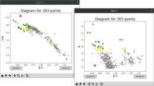

This program allows to unredden stars on a color-color plane. To do this we need prepare two files. The first file
should contain only necessary information about stars with the following columns:
id_star – integer number
Xcolor – float number
Ycolor – float number
Xcolor error – float number
Ycolor error – float number
The second file should contain the theoretical model of stars on that color-color plane (e.g. trace of the main
sequence stars) with the simple two-column structure:
Xcolor – float number
Ycolor – float number
Note that it's extremely important that the model must be sorted by increasing temperature. Hence it's usually enough
to sort data by the decreasing Xcolor. There are models which can produce hooks, for
example theoretical white dwarf sequences, so in such cases we must be more careful.
This package contains a python module which allows to convert data from the
vphas+
project to more convenient formats. The data can be downloaded using the
ESO query interface.
All data are stored in fits files and are divided into three groups:
catalog
image
source_table
Let's start from importing the module:
>>> from vphasfits import vphaslib
Each image file represents mosaics of 32 sky pawprints. They are enclosed in multi-extension
fits files. To get one of a pawprint (here 3) we can use the following function:
>>> vphaslib.pawprint_to_fits("filename.fits", 3)
Source_table file contains the list of stars found on an image (sky/image coordinates,
aperture/profile photometry, etc.). To download this data to a text file we can use the function:
>>> vphaslib.srctbl_to_txt("filename.fits", 3)
Catalog file contains the list of stars with the standard photometry in all
passbands. To save this data to a text file we should use the following function:
>>> vphaslib.catalog_to_txt("filename.fits")
The data are saved to new files located in the working directory. We can also have an influence on what keys
of an image header or which columns should be gathered during the saving process. To do this, please edit any
of three lists:
Moreover, the package contains three ready-to-use scripts. Each program can be called from the command
line and requires arguments (name of file, pawprint number), so anyone has a choice between how to manage
the data from the vphasplus project.
Unfortunately the last way doesn't allow to edit the above mentioned lists but their default values are
well defined.
Demulos is an acronym for delete multiple
objects. This program allows to select isolated
objects in dense stellar fields. These objects can be used to determine the PSF model on an image where all
stars were found. As an input we need an image in FITS format and a text file containing a list of all stars.
The file must have at least the following columns:
id_star – string value
X coordinate – expressed by pixel
Y coordinate – expressed by pixel
brightness – expressed by magnitude
error of brightness – expressed by magnitude
The order of the columns doesn't matter. The structure of the list should be defined inside the demulos.bash
file in the == set parameters == section. We just can open the script
in any editor and set some variables before use. If the files are prepared we can call the program:
The program creates an initial list of the brightest stars (i = 1, …, N) and for each star from
the list calculates a modified distance:
where Mmax denotes the magnitude of the faintest star on the image. If the distance is smaller than a real
distance between each of neighboring star, the i-star is not rejected from the initial list. If it is
larger, the i-star must be sufficient bright to be not rejected. Thus, if difference between brightness
of any neighboring star and considered object (i-star) is smaller than a value of the --diff-mag option,
the star is removed from the list. After all the software generates the final list of separated stars in the working directory. This list
is stored in a text file which has the same name as the input list with added -demulos suffix.
Fig. 1. Group of stars in dense field chosen by means of the demulos.bash script.
This application, based on the MVC architecture,
is a little advanced quiz which can be used either on a single computer or on a few machines simultaneously,
for example connected through LAN. It is not a good idea to put Astro Quiz on the Internet due to the fact that
it doesn't use any popular database. All information are stored in text files and a displayed web page is only
an interface between a user and the quiz. The application enables to define own set of questions and scoring.
Fig. 1. Welcome screen.
To run the application we must type localhost into the web browser's address bar.
To start Astro Quiz we have to type a name. Each name is validated, particularly whether is duplicated.
On the next pages a question with possible answers are displayed. Moreover, an image can be assigned to
a question. In each time a sequence of the answers permutates. Let's choose one of four answers and go further.
Fig. 2. Panel with question.
When we achieve the end the application will display our score. Note that all results are saved to a text file
which is a simple database located at the database/database file. It stores usernames,
collected points and flags marking correctness of each question.
Fig. 3. Results.
As an administrator we can look at results of all users at any time. Let's type
localhost/admin.php into the address bar. To go further we have to enter the password which is defined
in the astroquiz.cfg file. We can look at tables
representing scores and how users answered. Moreover, we can clean the whole database typing the password again.
As mentioned at the beginning we can create own quiz. To do this we have to prepare a text file with questions
and images in the case that questions need graphics. The structure of such text file should be following:
Note that Correct Answer is an integer (1-4). Image name
must contain an extension, e.g. .jpg. All these files must be located at the
files/ directory. Please see demo files in this localization if you encounter any issues.
You can create as many quizzes as you need. The current quiz is defined in the astroquiz.cfg
file. In this file you can also set the password for the admin panel and size of images.
This script filters data from a single text file using a particular column. As the title indicates the program uses
the σ-clipping algorithm. Let's consider first lines of the input file and focus on seventh column:
We want to choose points which are centered around the mean value. Moreover, using input parameters we can have an affect
on results. To do this, please call the script with some options:
$> bash good_points data.lst 7 1.8 10 80
Note that the name of an input file must have a file extension. This is caused by the fact that results will be stored
inside a file with the same name and the .good extension. The above call means that the
script analyzes the input file ignoring empty lines and comments. In each iteration it calculates the mean value and the
standard deviation, and according to these values the program rejects outlying points. The first argument should be
the name of the input file. Only this argument is mandatory. The number 7 indicates a column to study. The standard
deviation is scaled by 1.8. The program executes 10 iterations and each iteration must use minimum 80 points. Otherwise it
reports that an error has occurred. Moreover, the script outputs some information on the screen:
All lines which contain remaining points are saved to the data.good file. To see the default
values of the optional arguments, please call the program without any arguments. Note that this program can be a great alternative
to another programing languages. The Linux default software is sufficient to use the script properly, hence you don't need to
install additional packages.
The program enables to make a photometric standardization. It converts instrumental magnitudes to standard values.
Only one input file is required. This file must contain a special format related to wavelengths of passbands. Consider
four passbands (there is no limitation), e.g. U, B, V, I, then the first five lines of the complete input file with
a header may look like (labels from a header are used to sign axes):
The most important thing is that the sequence of consecutive columns must represent passbands with a growing wavelength.
Each passband is related with four values: instrumental magnitude, its error, standard magnitude, its error. If any value does't
exist, don't worry, it should be masked by 99.9999. Now we can call the program from a command line interface with default arguments:
For each pair of neighboring passbands the program fits a straight line to a cloud of points with parameters A and B:
The fitting, based on the orthogonal distance regression, uses
errors from an input file to weight the data. At the end the program generates an output file with converted magnitudes for all
stars. Moreover, it produces a log file with parameters and PNG images showing the final fitting for each pair. The strength of
this program reveals when we use an interactive mode. Let's call the program again with more options:
Now the program makes the fitting iteratively (5 times) removing points that are smaller or larger than m±2σ.
After all it displays an interactive window with all points and the final matched line (red). The gray line represents the initial
fitting. We can eliminate remaining points (blue dots) just clicking on them. The -e option helps us to identify points with large
errors. If you need more information, please use the -h option to display the short manual of the program.
Fig. 1. Screenshot of the interactive window view.
This program has two purposes. The first one is an interactive identification of the same star on different color-magnitude
or color-color diagrams, a CMD and CCD respectively. We can make this efficiently. The second is a making images of diagrams
additionally marking specific groups of stars. The basic usage requires only one input file with a header and columns with
data. The first five lines of an input file may have the following structure (labels from a header are used to sign axes):
The input data should be prepared before use. There isn't any mechanism in the program to control a quality and correctness
of the data. Let's begin with the simplest call. We can plot as many diagrams as we need (in this description we'll use two
diagrams). Each plot will display on a separate window. Assume that we want to look at (U-B vs B-V) and (B vs B-V) diagrams
to identify specific stars. Now we have to correlate colors and passbands with particular columns:
This call means that the program should read the input file and then display two windows with a CCD (10 vs 12) and CMD
(4 vs 12). The first argument of the --col option refers to x-coordinates while the second to y-coordinates. The minus
value indicates that an axis will be reversed. At least one --col option is mandatory. On the both diagrams the stars
are represented by gray points. Clicking on any point changes its color on red – for all windows simultaneously.
In this way we can identify an object on different diagrams very quickly. But this isn't the end. If we need more information
about the object, we should use the feedback button, which returns an appropriate line from the input file. The feedback is
printed to the standard output (console) in the following format:
Due to the fact that matplotlib defines an area around the cursor position it is possible to mark more than one object on
a crowded diagram. In this case returned information will contain lines of all marked stars separated by
# object NR. We can also make a snapshot of the current view
of diagrams in any time. There is no limitation of an amount of snapshots. All images are saved as PNG files in the working
directory. To make this function more useful we can bring the --grp option into play. If the first column of the input file
contains unique numbers of stars, we can group specific objects by different colors. The only thing we need is a simple file
with one column which contains numbers of particular objects, for example:
6 10 15
A name of this file should be used as the first argument of the --grp option. The second argument specifies which color to
apply marking stars. Assume that we've just created two such files and we want to distinguish them on diagrams. Let's call
the program again:
More information can be found using the -h option. Note that it's possible to use the program in the wider context. For
a globular cluster we can display not only a CMD or CCD diagram but additionally a (RA vs DEC) plot which is a simple 2D map.
Only need to prepare the proper input file.

Fig. 1. The CCD and CMD diagrams. Two groups are distinguished by green and yellow color. One selected star is marked by red color.
This console program allows to search for common objects in two databases by the XY coordinates. It calculates distances between points
and if these are less than the assumed value, it returns matched objects with the smallest separation. Seems to be simple but the program
reveals the power when we use its options. Let's prepare two input files where the sample may look like:
The most important fact is that the first four columns (the last is optional) should have the following structure:
id_star – as an integer number
X coordinate – usually expressed by pixel
Y coordinate – usually expressed by pixel
brightness – usually expressed by magnitude
Moreover, assume that the first file has a one-line header and the second file starts from a two-line header. Let's call the program
with a few options:
It means that the program will identify objects from two databases using their XY coordinates. The search radius was set to 2.8 px.
Because the input files contain headers the -h option ignores one and two first lines in the first and second input file, respectively.
The -o option adds an offset to the data. It just transforms coordinates from the first input file adding 0.4 to each X value and -0.3 to
each Y value. The -m option defines the output format. In this case the program will print 8 columns: id1, x1, y1, id2, x2, y2, r, mag1-mag2.
The -s option sorts the output data by the specified column. Comparing it with the -m option we see that the output will be sorted by r values.
For more details please call the program with the --help option. This program is useful when we work with the DAOPHOT package. For example,
it helps to control lists of stars in different passbands or to prepare groups of stars to calculate the PSF model.
{kind=link}